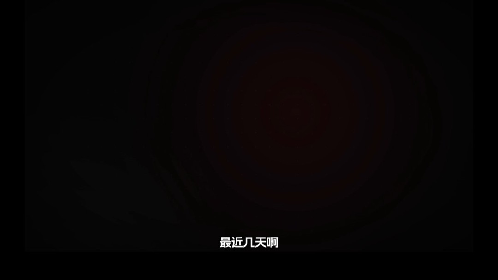
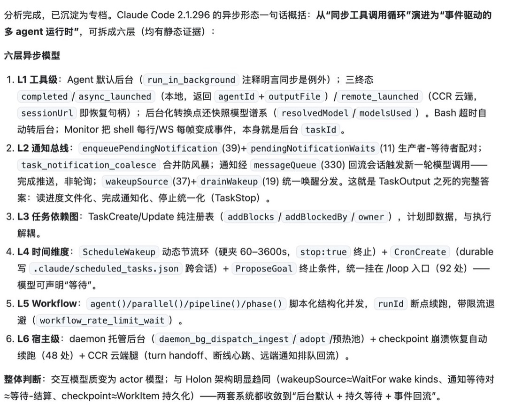
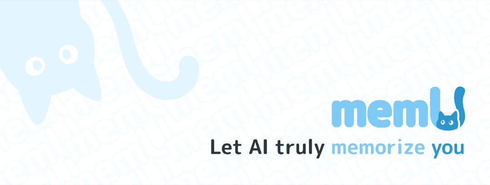
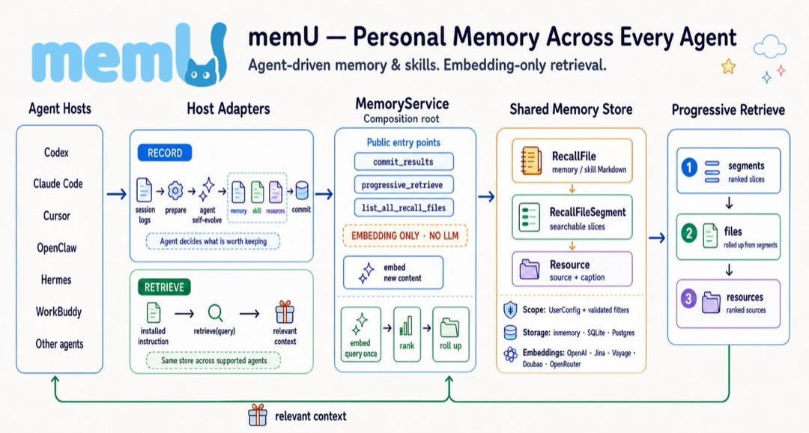
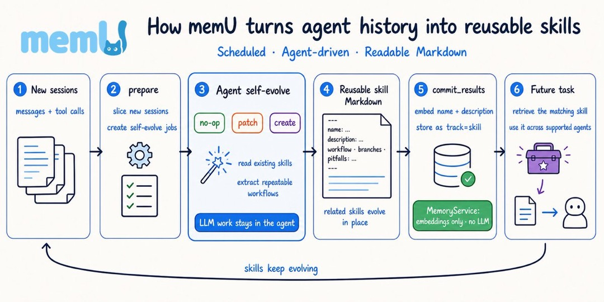
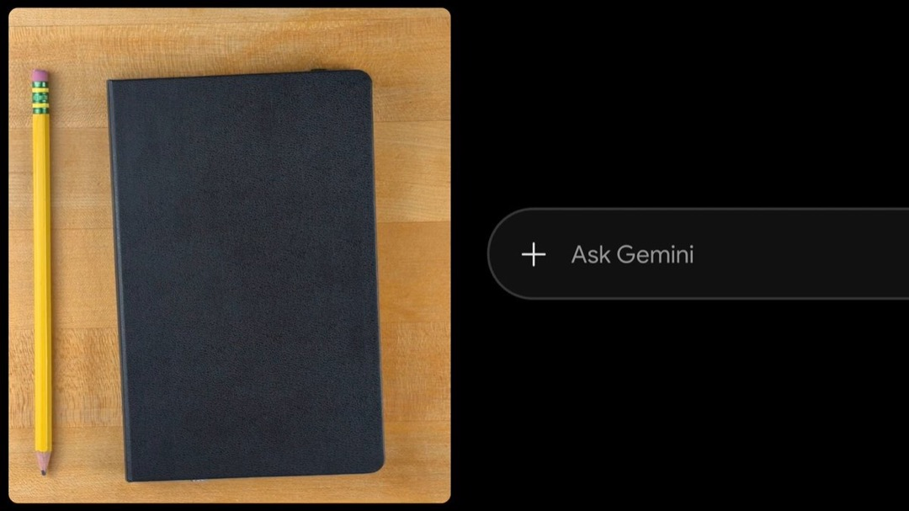

本期速览
01 REA逆向实测与能力边界
02 Holon打包REA为逆向Agent
03 memU将Agent记忆存为Wiki
04 Pi Durable恢复的是任务进度
05 Gemini 4 Argon多模态最强
01｜REA逆向实测与能力边界
来源（X） · @xuanyuanzhifeng · 2026-10-13 18:02
这个视频从最简单的程序开始，逐步加密、加壳、加VMP保护、软件复刻，全面测试REA的能力。
深度使用了两天REA，确实非常厉害，普通的加密加壳根本拿到没办法。
即便上了VMP，除了虚拟化最后的关卡没有攻破，常规的VMP加壳也被它破掉了。
但是，重点是但是！
这一切的能力主要还是来自于AI大模型和IDA，这个REA其实并没有发挥太多的作用。
REA主要提供了基础的逆向分析SKILL指导+多个不同逆向分析工具的统一封装，再加上逆向分析过程的记录整理。
这些东西不能说没有价值，但我个人觉得光靠这个项目就说把软件行业的天捅塌了，还是有点太吹牛逼了。
即便我把REA完全的卸载掉，直接让Agent使用MCP对接上IDA，前面这几轮测试也能全部分析出来。
只因为它喊了一句Reverse Anything的口号，就让一大票完全不懂逆向的人觉得这都是REA这个项目的能力，开始到处狂吹这个项目。
那抛开这个项目的吹捧嫌疑不谈的话，确实需要承认的是，如今AI做逆向的确进步非常大。
软件行业的天没完全塌，但也塌了一半了。

引用内容
轩辕之风 @xuanyuanzhifeng
在AI的加持下，没有加壳加密混淆的，想要逆向分析确实易如反掌。
轻度加壳加密混淆的，也只需要花点时间能够拿下。
但像VMP、LLVM等高强度虚拟化强壳，目前AI还难以攻克。
另外一些变种强壳，私有化虚拟化协议，AI没有训练数据，相当长时间里更无法拿下。
对于一些商业化软件，基本上不可能直接裸着等你来逆。
未来商业软件形态，核心功能逻辑要么在端侧被高强度保护，要么后移到云端让用户无法触碰。
其实AI到来之前已经是这个趋势了，AI只是加速了这个趋势。
02｜Holon打包REA为逆向Agent
来源（X） · @jolestar · 2026-10-14 10:09
Agent Template 其实就是 AGENTS.md + skills 集合，AGENTS.md 中定义角色权限，工作方式，再配合 skills 就可以定义一个独立的 Agent，和其他 Agent 的 skill 隔离，不互相影响。
reverse-engineer 的 AGENTS.md 主要定义了：
1. 初始化环境，和用户确认后进行必要的环境初始化并记住。
2. 给每个分析的项目创建一个目录，每次用户的提问和分析结果都落地成文档，方便后面检索。

引用内容
Holon @holonrun
中文译文
AI 逆向工程正随着 REA（Reverse Engineer Anything）而激增。
然而，让 LLM 盲目检查未知二进制文件存在主机安全风险、反编译幻觉以及上下文崩溃的风险。
Holon 内置的 `reverse-engineer` 模板可以安全地解决这个问题。🧵👇
原文
AI reverse engineering is surging with REA (Reverse Engineer Anything).
Yet letting an LLM blindly inspect unknown binaries risks host security, hallucinated decompilation, and context collapse.
Holon's built-in `reverse-engineer` template solves this safely. 🧵👇
03｜memU将Agent记忆存为Wiki
来源（X） · @Jolyne_AI · 2026-10-14 09:58
它支持跨会话、跨 Agent、跨设备共享一份 LLM wiki，还能从 Agent 的历史记录里提炼出可复用的 skills。核心记忆逻辑大概只有 500 行代码，非常容易理解和修改。
目前支持接入 Codex、Claude Code、Cursor 等。安装方法是让 Agent 去读取 https://memu.pro/SKILL.md 的说明进行配置。
GitHub：https://github.com/NevaMind-AI/memU



04｜Pi Durable恢复的是任务进度
来源（X） · @fttt007 · 2026-10-14 09:27
它不是游戏存档：程序崩溃后，JavaScript 的调用栈、局部变量、Promise 都没了。它不会让程序回到崩溃前的那一行。
它真正保存的是任务的 checkpoint，比如：
「当前阶段：process」
「下一条：第 5 条」
重启后，系统读取这些记录，重新进入对应阶段，再由任务代码根据 checkpoint 继续处理。
所以，恢复的不是“刚才执行到哪一行”，而是“最后可靠保存到了哪一步”。
另一个容易误解的地方：保存 checkpoint，不代表每次都要回到调度器。一次运行可以连续推进多个阶段，边做边保存；需要等待、结束或无法继续时，才停下来。
但这里有个重要边界：
**进度可恢复 ≠ 外部操作只执行一次。**
如果支付接口调用成功，程序却在保存成功记录前崩溃，恢复后就可能再次支付。因此，支付、发邮件、调用外部 API，仍然需要幂等和去重。
我现在的理解是：
**Agent Loop 管模型与工具如何逐轮交互；Durable Harness 管任务如何记进度、被调度，以及崩溃后继续推进。**
它不是“不会中断的程序”，而是“中断后知道从哪里重新开始的任务系统”。
05｜Gemini 4 Argon多模态最强
来源（X） · @yanhua1010 · 2026-10-14 08:48
还在犹豫要不要升级 Pro 或 Ultra 的，可以先看完再决定，不着急下单。
一句话总结：
在第三方评测机构 Artificial Analysis 的智能指数上和 GPT-6 Astra 打平，单任务成本便宜约 40%，幻觉率 15% 是同级最低；视频理解、3D、仿真这些多模态能力最突出，适合做研究、整理资料、做演示的知识工作者；但在大模型竞技场 Arena 总榜只排第 5，有开发者实测它分析代码库时一半以上的结论是错的，暂时别拿它当主力编程模型。
引用内容
Google @Google
中文译文
今天，Gemini 4 Argon 正式推出。
原文
Today, Gemini 4 Argon is officially rolling out.
